Vanilla Bean and Blackberry Zebra Cheesecake
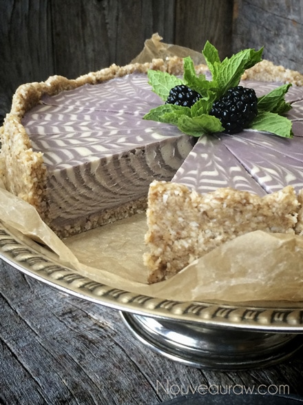
~ raw, vegan, gluten-free ~
Did you know that food can actually become an art medium? If you don’t have the natural ability to paint like Bob Ross, sew a quilt like the little church ladies down the road, or perhaps you freeze when asked to draw a stick person… that’s ok.
Today, you will become an artist that uses raw ingredients as your art medium! If I can do it… so can you.
Below I have provided step-by-step photos to help you along the way. Be prepared to be amazed and to amaze those around you. Please kneel before me as I take my spatula and hereby dub you a true artist! :)
This isn’t the first time that I have shared this technique with you, I started making cheesecakes like these a few years ago. So, if you are a long time reader, it’s ok to still be awestruck. And for those of you who are new to the site and/or to this technique, it’s ok to jump up and down with excitement… we are all here to support you. :) And this is much easier to do than it looks.
For some quick ingredients substitutions; you can change out the raw agave for any liquid sweetener of your choice. Keep in mind that some are sweeter than others so you might need to make a few adjustments. If you don’t have fresh blackberries, you can use frozen ones. Be sure to thaw them before using them. I used vanilla bean seeds in the vanilla filling. I highly recommend it because of the rich flavor that it will impart but you can always replace it with 1 tsp of vanilla extract. Enjoy!
 Ingredients: 9″ Springform pan
Ingredients: 9″ Springform pan
Crust:
Base batter: yields 4 cups
- 3 cups cashews, soaked 2+ hours
- 1 cup raw almond milk
- 3/4 cup maple syrup
- 1 Tbsp fresh lemon juice
- 1 Tbsp vanilla extract
- 1/4 tsp Himalayan pink salt
Vanilla batter:
- 2 cups base batter, from above
- 1 vanilla bean, seeds only
- 1/2 cup coconut oil, melted
- 1 1/2 Tbsp sunflower lecithin, powder or liquid
Blackberry batter:
Preparation:
Crust:
- Assemble a Springform pan with the bottom facing up, the opposite way from how it comes assembled. This will help you when removing the cheesecake from the pan, not having to fight with the lip. Wrap the base with plastic wrap. This will make it easier to remove the pie when done… unless you plan on serving the cake on the bottom of the pan.
- In the food processor, fitted with the “S” blade, combine the shredded coconut, walnuts, salt and process till the nuts resemble a small crumble.
- Be careful that you don’t over-process the nuts and head towards making a nut butter. Nothing wrong with that… just not our goal at the moment.
- Adding the dry ingredients together first ensures that they will get well distributed so you don’t end up with concentrated pockets of flavors.
- Add the date paste and process until the batter sticks together.
- Depending on your machine, you may need to stop the unit and scrape the sides down during this process.
- Test the batter by pinching it between your fingers. If it holds, it is ready.
- Distribute the crust evenly on the bottom of the pan, using even and gentle pressure. If you press too hard it might really stick bad to the base of the pan, making it hard to remove slices. You can either just make the crust on the bottom of the pan or you can also bring it up the sides. It is up to you.
- Set aside while you make the cheesecake batter.
Batter / filling:
- Drain the soaked cashews and discard the soak water. Place in a high-speed blender.
- In a high-powered blender combine the; cashews, almond milk, sweetener, lemon juice, vanilla, and salt.
- Due to the volume and the creamy texture that we are going after, it is important to use a high-powered blender. It could be too taxing on a lower-end model.
- Blend until the filling is creamy smooth. You shouldn’t detect any grit. If you do, keep blending.
- This process can take 2-4 minutes, depending on the strength of the blender. Keep your hand cupped around the base of the blender carafe to feel for warmth. If the batter is getting too warm. Stop the machine and let it cool. Then proceed once cooled.
- You can use a different liquid sweetener if you are not comfortable with agave. Just be aware of the different flavors and colors that the sweetener might impart in the cake.
- Once this is creamy and smooth, remove 2 cups of the filling.
- Vanilla batter:
- Add to the 2 cups of batter, vanilla beans, and drizzle in the coconut oil. Blend until creamy and add lecithin. Pour into a medium bowl. Rinse the blender container.
- Blackberry batter:
- Add the remaining 2 cups of batter and combine with the blackberry syrup, coconut oil, and agave. Blend until creamy then add the lecithin. Pour in a separate medium-sized bowl.
Assembly:
- Place in front of you; pie crust, both bowls of batter, with a 1/4 cup measuring cup in each bowl. Sit down and relax through this process.
- Start with 1/4 cup of blackberry filling and place it in the center of the crust. Don’t spread it out, just let it pour out of the measuring spoon.
- Next, scoop up 1/4 cup of the vanilla bean batter and pour it into the center of the berry filling that is in the pie crust.
- Now, alternate 1/4 cup at a time until all of both batters are gone. Don’t tap the pan through the process, just let gravity do all the work. Note: you will have excess blackberry filling, pour into single serving cups for extra dessert treats.
- If you want smaller rings just use 1 Tbsp amount of batter for each ring.
- Finally cover with plastic and place in the fridge overnight to firm or in the freezer for at least 6 hours.
- Remove and decorate. This pie will keep for 3-5 days in the fridge or safely for 3 months in the freezer. Keep well covered.
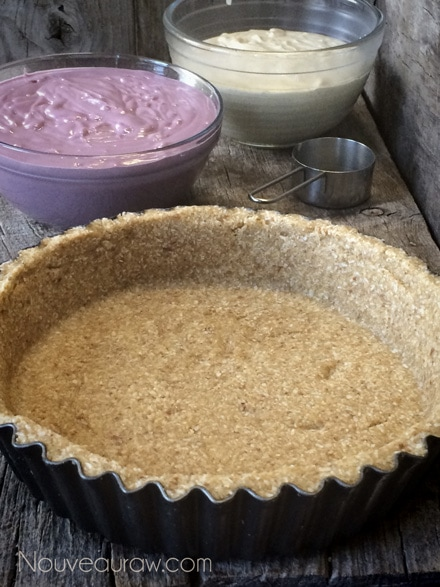
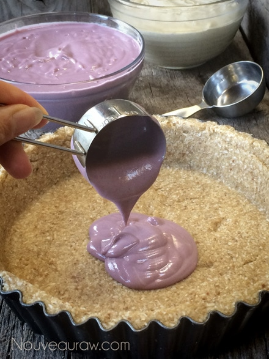
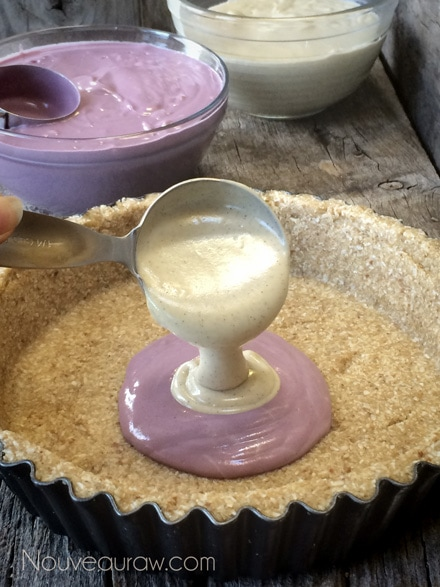
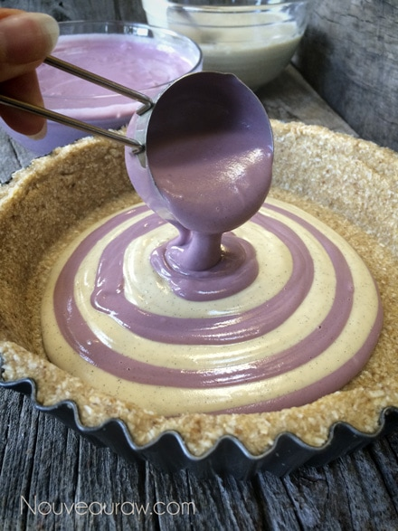
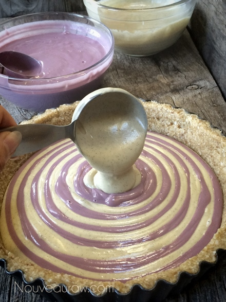
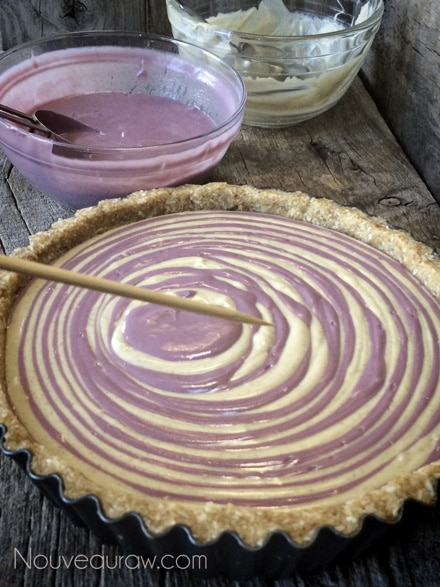
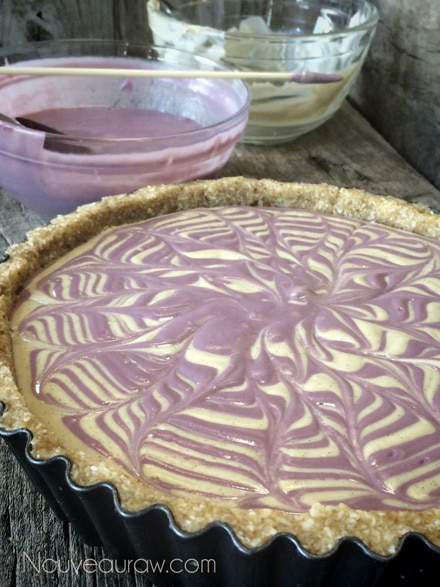
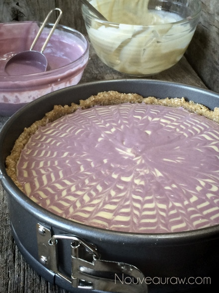
Did you grow up watching Scooby-Do? I did, yep, I am showing my age here
but then that won’t be the first time, nor the last… One thing that Scooby always
talked about was “Scooby snacks”. If you know the cartoon, you can already
hear his voice in how he said it… well, whenever I made a cheesecake I always
make a few little cups just for Bob… Bobby snacks!
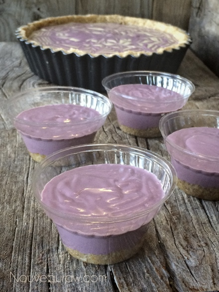
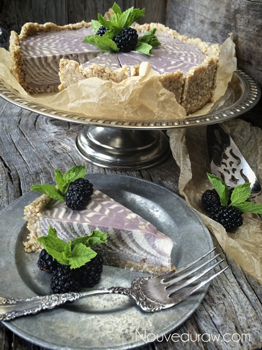
Below, is another one that I made, the color was a bit more vibrant… goes to
show you how different batches of berries can really change things. :)
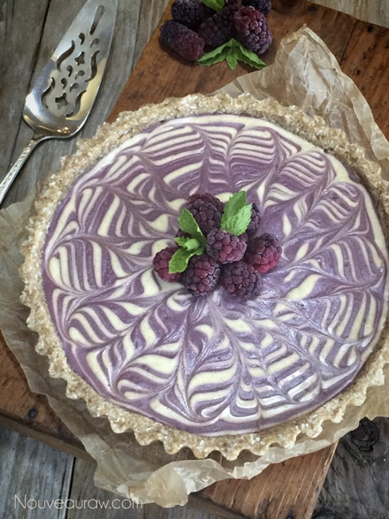
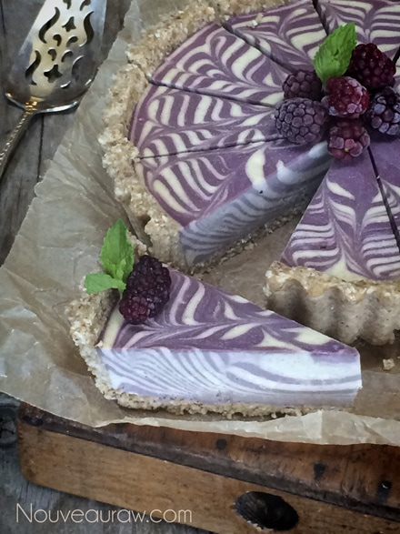
© AmieSue.com